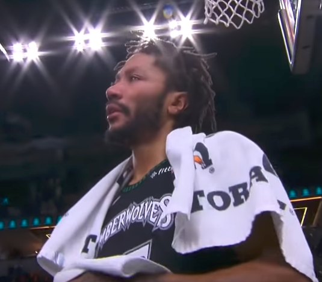

Featured Articles

D Rose records a career high 50 points
Derrick Rose has had a lot of struggles through out his career. The youngest NBA MVP had a tremendous career with the Chicago Bulls up until in 2012 when he suffered a career changing injury tearing his ACL. From then on he has had disappointing seasons, suferring a number of injuries, playing one year with the New York Knicks and half a season with the Cleveland Cavaliers before being traded. When signing with the Minnesota Timberwolves, Rose always believed in himself as he looks to take any opportunity that he sees with both hands.
Rose did just this when he scored a 50 points against the Utah Jazz, which was the most in his career. With this being his first time starting this season he brought flashbacks of his prime years in this performance. He moved past the defensive traffic and hit highly contested shots reminding people of the clutch moments he had in his early years. He continued to amaze the crowd as he brought the Timerwolves to a 128-125 victory.
An emotonal Rose embraced the audience after receiving a standing ovation. The 50 points that he has scored this season are the fourth most scored this season. His spectacular performance was praised by other NBA superstars such as LeBron James, Dwyane Wade and even Scottie Pippen.